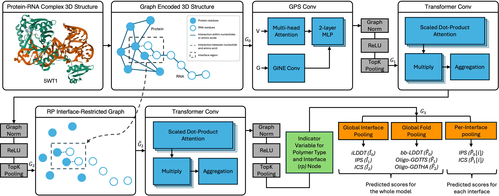

Inferring the qualities of protein–RNA models with graph transformers

Abstract. Motivation. Breakthrough advancements in protein tertiary and quaternary structure prediction have accelerated structural bioinformatics research activity and drug development processes. However, many biological mechanisms involve more complicated interactions, such as those between amino and nucleic acids. Predicting the structure of protein–RNA complexes is highly relevant and challenging due to data scarcity and experimental difficulties. Understanding and interpreting these interactions can yield crucial insights into various human diseases and biological phenomena. Thus, quality assessment methods that specifically evaluate protein–RNA complex models can provide significant utility in this emerging area of protein–RNA structural bioinformatics research.
Results. We propose a novel graph transformer-based approach named CARP (complex quality assessment of RNA and protein) to infer multiple quality perspectives of protein–RNA complex models. For a single protein–RNA complex model, in one shot, CARP simultaneously predicts multiple overall fold, overall interface, and per-protein–RNA interface quality estimates. When evaluated against a non-redundant protein–RNA docking benchmark, our methods demonstrated obvious improved performance compared to almost all of the existing scoring tools, particularly when ordering and selecting the highest quality decoys. Furthermore, CARP consistently selected higher quality models relative to other predictors when tested on CASP16 targets. Specifically, CARP-predicted global interface and global protein–RNA interface qualities were ranked first and second, respectively, based on the selected top-3 models over all ten CASP16 protein–RNA complex targets. CARP also showed a strong ability, compared to both existing tools and AlphaFold3 self-estimates, in selecting high quality AlphaFold3 models.